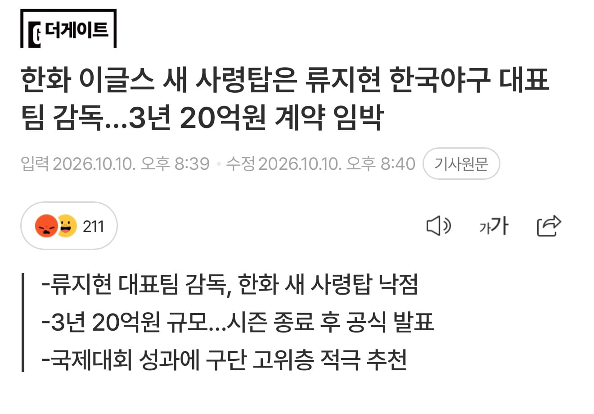
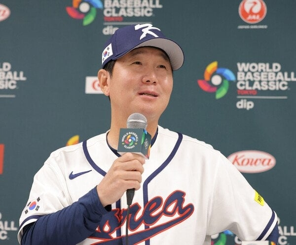

https://m.sports.naver.com/kbaseball/article/529/0000078856
기껏 달감 내쫓고 데려오려는게 류딱딱 ㅋㅋㅋㅋㅋㅋㅋㅋㅋㅋㅋㅋ


https://m.sports.naver.com/kbaseball/article/529/0000078856
기껏 달감 내쫓고 데려오려는게 류딱딱 ㅋㅋㅋㅋㅋㅋㅋㅋㅋㅋㅋㅋ
ㅋㅋㅋㅋㅋㅋㅋㅋㅋㅋㅋㅋㅋㅋㅋㅋㅋㅋㅋㅋㅋㅋㅋ
다른팀은 몰라도 한화팬들은 양심있으면 감독욕 하지마라
위에 아직도 감독탓하는 멍청이들 많은거 보니까 답없음ㅋㅋㅋ
야구는 프런트와 육성파트가 70퍼다
작년 2위까지 올려놨는데 왜 유지가 안될까
1. 폰와가 없음
2. 문동주가 없음
3. 김서현이 완전히 망가짐
4. 류현진이 에이징 커브 씨게 맞음
5. 프런트가 불펜 보강을 전혀 안 함
이 정도 재앙이면 감독도 어찌 못하지 않음?
폰와 있었을때도 감독은 김경문 아니였냐 ㅋㅋㅋㅋㅋ
국제대회 성적이요? ㅋㅋㅋㅋ 나 이번에 경기보면서 감독욕 많이 했는데 한화 미래가 어둡구나.